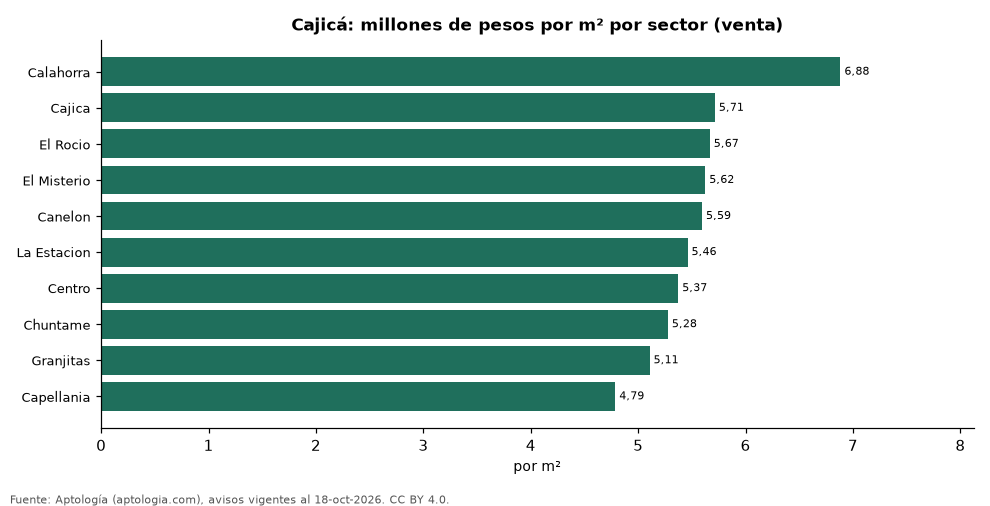
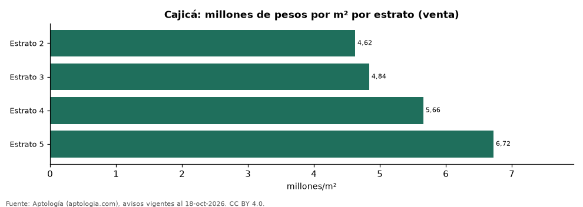

Vivienda en Cajicá: precio por m², arriendo, habitaciones, estrato y administración (octubre 2026)
Estudio con datos abiertos (CC BY 4.0). Versión original: https://github.com/elbroker/aptologia-datos/tree/main/estudios/vivienda-cajica-venta-arriendo-estrato-2026 · DOI: 10.5281/zenodo.23471162
El sector con el metro cuadrado más caro de Cajicá es Calahorra, con 6,88 millones de pesos en la mediana de apartamentos en venta; el más barato de la muestra es Capellania, con 4,79 millones de pesos. Un apartamento de 2 habitaciones se arrienda por 1,90 millones de pesos al mes en la mediana y se vende por 330 millones de pesos. La rentabilidad bruta implícita del arriendo es 7,2 % anual. La administración equivale al 14,3 % del canon (300.000 pesos al mes en la mediana).
Resumen: analizamos 1.912 avisos de apartamentos en Cajicá (1.526 en venta y 386 en arriendo).
Actualizado: 18 de octubre de 2026 (datos del 18 de octubre de 2026) · Próxima actualización: mensual.

Resumen
| Indicador | Valor |
|---|---|
| Más caro (venta por m²) | Calahorra: 6,88 millones de pesos |
| Más barato (venta por m²) | Capellania: 4,79 millones de pesos |
| Venta por m² (mediana) | 5,67 millones de pesos |
| Arriendo 2 habitaciones | 1,90 millones de pesos |
| Rentabilidad bruta implícita | 7,2 % |
| Administración / canon (mediana) | 14,3 % |
| Avisos | 1.912 |
Sectores (30 avisos o más)
| Sector | Venta por m² (millones de pesos) | Arriendo mensual (millones de pesos) | Avisos (venta / arriendo) |
|---|---|---|---|
| Calahorra | 6,88 | 2,80 | 99 / 34 |
| Cajica | 5,71 | 2,00 | 186 / 50 |
| El Rocio | 5,67 | — | 36 / — |
| El Misterio | 5,62 | — | 58 / — |
| Canelon | 5,59 | — | 70 / — |
| La Estacion | 5,46 | — | 83 / — |
| Centro | 5,37 | 1,75 | 129 / 30 |
| Chuntame | 5,28 | 1,70 | 123 / 33 |
| Granjitas | 5,11 | — | 39 / — |
| Capellania | 4,79 | — | 33 / — |
Medianas de apartamentos; — indica menos de 30 avisos. El canon es mensual, sin administración ni gastos comunes.

Precio por número de habitaciones
| Habitaciones | Precio de venta (mediana) | Arriendo mensual (mediana) | Avisos (venta / arriendo) |
|---|---|---|---|
| 1 | 292 millones de pesos | — | 42 / — |
| 2 | 330 millones de pesos | 1,90 millones de pesos | 566 / 206 |
| 3 o más | 450 millones de pesos | 2,80 millones de pesos | 917 / 154 |
Por estrato
| Estrato | Venta por m² (millones) | Arriendo mensual (millones) | Avisos (venta / arriendo) |
|---|---|---|---|
| 2 | 4,62 | — | 41 / — |
| 3 | 4,84 | 1,60 | 264 / 78 |
| 4 | 5,66 | 2,20 | 884 / 228 |
| 5 | 6,72 | 3,00 | 267 / 70 |
Medianas; — indica menos de 30 avisos.
Preguntas frecuentes
¿Cuál es el sector más caro de Cajicá? Calahorra, con 6,88 millones de pesos por m² en apartamentos en venta (octubre de 2026).
¿Dónde es más barato comprar apartamento en Cajicá? Entre los sectores con 30 avisos o más, en Capellania: 4,79 millones de pesos por m².
¿Cuánto renta un apartamento en Cajicá? La rentabilidad bruta implícita es 7,2 % anual (arriendo por m² × 12 ÷ precio de venta por m²), antes de gastos.
¿Cuánto cuesta arrendar un apartamento de 2 habitaciones en Cajicá? 1,90 millones de pesos al mes en la mediana (octubre de 2026).
Metodología
- Fuente: exportes nocturnos de la base de datos de Aptología (aptologia.com) del 18 de octubre de 2026: avisos vigentes de vivienda en portales inmobiliarios de 13 países, recogidos por Aptología y vistos en línea entre el 11 y el 18 de octubre de 2026. Corte: 18 de octubre de 2026.
- Depuración: se eliminan duplicados exactos (misma ciudad, zona, tipo, precio, moneda, área, habitaciones y baños) y los precios fuera del percentil 1–99 de cada país, operación, moneda y tipo; el precio por m² usa solo avisos con área declarada entre 12 y 2.000 m² y también se recorta al P1–P99.
- Qué se mide: precios pedidos (publicados), no precios de cierre. En arriendo, el canon mensual sin administración, gastos comunes ni condominio.
- Muestra mínima: cada cifra publicada se apoya en al menos 30 avisos; las celdas con menos se omiten.
- Colombia: Precios en pesos colombianos, sin conversión de moneda. Administración ÷ canon con razones entre 1 % y 80 %.
- Limitaciones: la cobertura depende de los portales que recorre Aptología en cada país y es mayor en las ciudades grandes y en los segmentos medio-alto y alto; el área es la que declara el aviso, sin verificar; los nombres de zona vienen de los portales.
- Privacidad: solo se publican agregados; no se publica ningún dato personal, enlace a avisos ni nombre de anunciante.
- Datos abiertos: datos.csv, licencia CC BY 4.0.
Cómo citar
Pinzón Pineda, D. M. (2026). Vivienda en Cajicá: precio por m², arriendo, habitaciones, estrato y administración (octubre 2026). Aptología (aptologia.com). https://github.com/elbroker/aptologia-datos/tree/main/estudios/vivienda-cajica-venta-arriendo-estrato-2026. Datos: datos.csv, licencia CC BY 4.0.